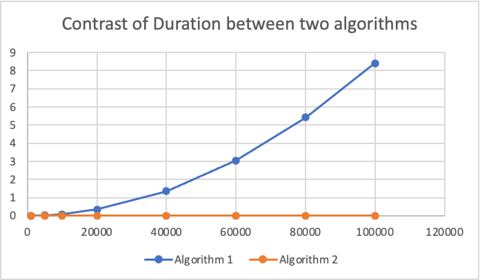

Project 1: Performance Measurement(A+B)¶
Chapter 1 : Introduction¶
Problem¶
Description¶
We are given a set \(S\) of \(n\) positive integers that are no more than \(V\). Then we are given a number \(c\), hoping find two integers \(a\) and \(b\) from \(S\) to make \(a+b=c\).
Input¶
The input file includes \(K+3\) lines.The first line provides a positive integer \(n\).The second line provides \(n\) positive integers which constitute the set \(S\).The third line provides a positive integer \(K\).The next \(K\) lines provides \(K\) positive integers,meaning that there are K queries to find the pair \(<a,b>\) for each integer.
Output¶
The output file requires to print out all pairs \(<a,b>\) for each query in the format "No.X : A + B = C"
If there is no answer,print "Cannot find the possible
Sample Input¶
Sample Output¶
| Text Only | |
|---|---|
Algorithm Analysis¶
We have two algorithms to solve this problem. One is directly searching the pairs whose time complexity is \(O(N^2)\) and another is using Binary_Search algorithm together with Quick_Sort algorithm whose time complexity is \(O(NlogN)\).Introductions of Binary_Search algorithm and Quick_Sort algorithm are as follows:
Binary_Search algorithm¶
The Binary_Search algorithm is an efficient search algorithm used to find target elements in ordered datasets.
Its implementation principle is based on the idea of divide and conquer, which quickly locates target elements by gradually reducing the search range by half.It's implementation steps are as follows:
(1)Initialize two pointers¶
The left pointer points to the starting position of the search range.
The right pointer points to the end of the search range.
(2)Find intermediate element¶
Calculate the middle position of the left and right pointers, which is (left+right)/2.
(3)Compare intermediate element¶
Compare the target element with the element in the middle position.
If the target element is equal to the element in the middle position, the target element is found and the search ends.
If the target element is smaller than the element in the middle position, update the right pointer to the previous position in the middle position, and narrow the search range to the left half.
If the target element is greater than the element in the middle position, update the left pointer to the next position in the middle position, and narrow the search range to the right half.
(4)Repeat steps (2) and (3)¶
Continuously calculate the middle position and compare the middle elements until any of the following conditions are met:
1)Find the target element, which is equal to the element in the middle position.
2)The left pointer is greater than the right pointer, indicating that the search range is empty and the target element does not exist.
Quick_Sort Algorithm¶
The Quick_Sort Algorithm evolves from Bubble_Sort Algorithm and is actually a recursive divide and conquer method based on bubble sorting.
Quick_Sort Algorithm selects a standard element in each round and moves other larger elements to one side of the sequence, while smaller elements move to the other side, thus breaking down the sequence into two parts.It's implementation steps are as follows:
(1)Initialize two pointers¶
The left pointer points to the starting position of the search range.
The right pointer points to the end of the search range.
(2)Find intermediate element¶
Calculate the middle position of the left and right pointers, which is (left+right)/2.
(3)Arrange the left and right areas¶
Move elements larger than the intermediate element to right side of the sequence, while elements smaller than the intermediate element move to the left side.
(4)Repeat steps (2) and (3)¶
Continuously calculate the middle position and arrange the left and right areas until the left pointer is greater than the right pointer, indicating that the search range is empty and the sorting process is over.
Chapter 2 : Algorithm Specification¶
Algorithm 1¶
Algorithm 1 uses 2 "for" loops to solve this problem.The first loop enumerates \(a\) while the second loop enumerates \(b\).Then check whether \(a+b=c\).Pseudo-code is shown below:
| C | |
|---|---|
Algorithm 2¶
Algorithm 2 uses Binary_Search Algorithm and Quick_Sort Algorithm to solve this problem.We enumerate \(a\) and check whether \(c-a\) exists in the array.To check whether \(c-a\) exists in the array,the fastest algorithm is Binary_Search Algorithm,but we still need Quick_Sort Algorithm because Binary_Search Algorithm asks the array to be in ascending order or in descending order.Pseudo-code is shown below:
| C | |
|---|---|
Chapter 3 : Testing Results¶
Test Result Table¶
| V=x | N | 1000 | 5000 | 10000 | 20000 | 40000 | 60000 | 80000 | 100000 |
|---|---|---|---|---|---|---|---|---|---|
| Iterations(K) | 10 | 10 | 10 | 5 | 5 | 5 | 5 | 5 | |
| Ticks | 9054 | 213926 | 851319 | 1700067 | 6744624 | 15187568 | 27137317 | 42027946 | |
| Algorithm 1 \((O(N^2))\) |
Total Time(sec) | 0.009054 | 0.213926 | 0.851319 | 1.700067 | 6.744624 | 15.187568 | 27.137317 | 42.027946 |
| Duration(sec) | 0.000905 | 0.021393 | 0.085132 | 0.340013 | 1.348925 | 3.037514 | 5.427463 | 8.405589 | |
| Iterations(K) | 10 | 10 | 10 | 5 | 5 | 5 | 5 | 5 | |
| Ticks | 609 | 3422 | 6920 | 8153 | 16891 | 27993 | 34993 | 48396 | |
| Algorithm 2 \((O(NlogN))\) |
Total Time(sec) | 0.000609 | 0.003422 | 0.006920 | 0.008153 | 0.016891 | 0.027993 | 0.034993 | 0.048396 |
| Duration | 0.000061 | 0.000342 | 0.000692 | 0.001631 | 0.003378 | 0.005599 | 0.006999 | 0.009679 |
Test Result Plot¶

Chapter 4 : Analysis and Comments¶
Algorithm 1¶
Obviously the time complexity of Algorithm 1 is \(O(N^2)\) because it uses two loops of range \(n\).
The memory complexity of Algorithm 1 is \(O(N)\) because it only use the array "num" to store the datas.
Its code is simple but the duration of time is longer as the result shows.
Algorithm 2¶
The average time complexity of Quick_Sort Algorithm is \(O(NlogN)\) and the worst time complexity is \(O(N^2)\).The time complexity of Binary_Search Algorithm is \(O(logN)\).Since we enumerate \(a\) in the loop of range \(n\) and use Binary_Search Algorithm to search \(b\),the whole average time complexity of Algorithm 2 is \(O(NlogN)\).
The memory complexity of Algorithm 2 is \(O(N)\) because it only use the array "num" to store the datas.
Its duration of time is shorter,consistent with the result.but there is a possible data to make Quick_Sort Algorithm's time complexity reach the worst situation \(O(N^2)\).For a common set of input,Algorithm 2 is much better.
There are more algorithms to solve this problem, such as Hash-Table Algorithm.
Appendix : Source Code¶
Algorithm 1（\(O(N^2)\)）¶
Algorithm 2（\(O(NlogN)\)）¶
Data Generator¶
Declaration¶
I hereby declare that all the work done in this project titled “Performance Measurement（A+B）” is of my independent effort.